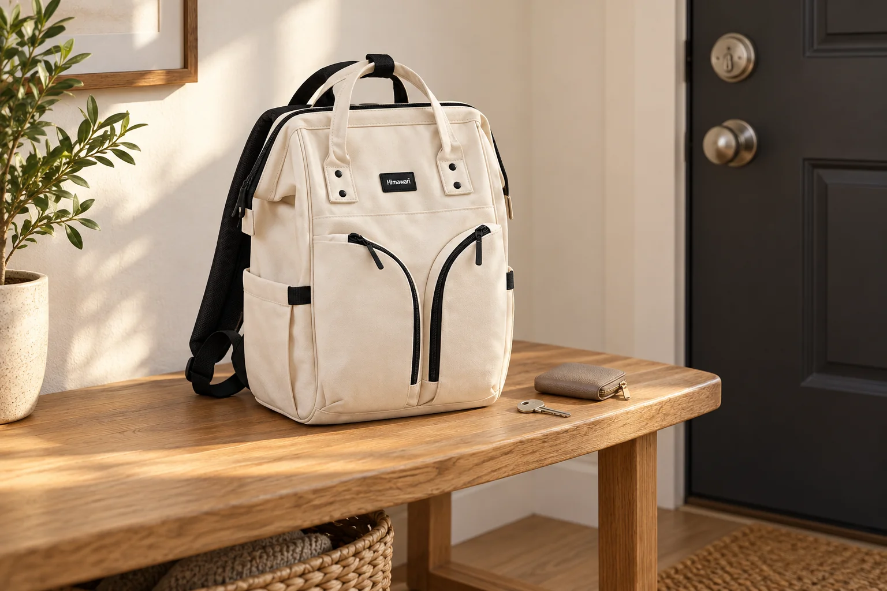

문을 연 뒤 열쇠가 돌아갈 자리

열쇠를 찾는 일은 문 앞에서 끝나지 않습니다. 문을 연 뒤 식탁에 두거나 옷 주머니에 넣으면 다음 외출에서는 가방 대신 집 안을 살피게 됩니다. 백팩 속에서 빨리 찾을 자리를 정해도 사용 후 돌아가는 동작이 빠지면 같은 일이 반복됩니다. 열쇠 한 묶음에 한해서는 꺼내는 위치와 되돌리는 위치를 같이 정해볼 만합니다. 가방 전체를 새로 정리하지 않아도 바꿀 수 있는 범위입니다.
먼저 열쇠를 실제로 펼쳐놓고 지금 사용하는 것을 확인합니다. 집 열쇠와 가끔 쓰는 다른 열쇠를 늘 한 고리에 두는지, 잠시 분리해도 되는지는 생활 방식에 따라 다릅니다. 고리를 바꾸기 전에 어느 열쇠가 어떤 문에 필요한지 확실히 알아야 합니다. 비슷한 열쇠를 표시할 경우에도 주소나 출입 정보를 밖에서 읽을 수 있도록 적어두기보다 본인이 구분할 수 있는 방법을 선택하세요.
눈으로 찾는 자리, 손으로 찾는 모양
작은 파우치를 사용할 생각이라면 다른 소품과 구분되는 모양을 먼저 봅니다. 휴대전화 부속품과 열쇠를 같은 모양의 파우치에 넣으면 문 앞에서 두 개를 열어야 할 수 있습니다. 손잡이 모양이나 파우치의 촉감처럼 잡았을 때 구분할 수 있는 차이를 이용할 수 있습니다. 큰 장식을 매달아 눈에 띄게 만드는 방법은 가방 지퍼와 엉킬 수 있으므로, 실제로 열고 닫을 때 방해되지 않는지도 함께 살펴보세요.
열쇠의 끝이 다른 물건에 닿는 것이 신경 쓰이면 닫히는 케이스를 검토합니다. 열쇠 묶음보다 지나치게 작은 케이스는 꺼낼 때마다 고리를 다시 정리하게 만들고, 너무 넓은 주머니는 다른 소품이 함께 들어갈 수 있습니다. 묶음을 자연스럽게 넣고 닫을 수 있는지, 필요한 열쇠를 펼칠 때 얼마나 꺼내야 하는지를 직접 확인하면 됩니다. 케이스를 사용하는 목적을 분명히 하면 필요한 크기를 고르기도 쉽습니다.
가방 속 자리에는 단순한 이름보다 꺼내는 동작이 필요합니다. 앞주머니라는 이름이 같아도 깊이와 여는 방향은 가방마다 다릅니다. 문 앞에서 백팩을 몸 앞으로 가져온 뒤 한 번 열고 파우치만 꺼낼 수 있는지 시도해보세요. 지갑 위에 겹쳐 놓아 열쇠를 찾을 때 지갑까지 움직인다면 다른 위치를 생각할 수 있습니다. 실제 짐이 들어 있는 평소 상태에서 확인해야 귀가할 때의 손동작과 가까워집니다.
장을 본 날의 문 앞
두 손에 다른 짐이 있을 때에는 평소와 같은 동작이 어려울 수 있습니다. 장바구니와 우산을 든 날이라면 문 앞에서 급히 등을 향해 손을 뻗기보다, 들고 온 물건을 안정된 위치에 놓을 수 있는지 먼저 봅니다. 그다음 가방을 몸 앞에서 열고 열쇠 묶음만 꺼냅니다. 복도에 다른 사람이 있다면 가방 내용물을 넓게 펼칠 필요 없이 필요한 물건만 다루면 통로를 오래 차지하지 않습니다.
열쇠의 위치를 정할 때는 가방을 바꿔도 이어갈 동작을 생각합니다. Himawari No.1208 제품 정보의 아이보리 모델을 검토한다면 실제 소지품을 담고 문 앞에서 파우치를 꺼내보는 방식으로 확인할 수 있습니다. 가장 쉽게 찾는 자리가 옷 주머니인지 가방인지도 생활 방식에 따라 다릅니다. 열쇠를 쓴 뒤 파우치를 어디에 돌려놓는지까지 연결해야 다음 출발에서도 같은 곳을 찾게 됩니다.

한 번 꺼낸 열쇠는 문을 열 때 필요한 것만 펼친 뒤 다시 묶음으로 정리합니다. 문을 열자마자 다른 짐을 들여놓아야 한다면 파우치를 잠깐 둘 자리를 현관 안쪽에 정할 수 있습니다. 이 자리는 가방으로 되돌리기 전의 임시 위치입니다. 열쇠가 다른 우편물 아래에 놓이거나 신발장 안으로 들어가지 않도록, 나머지 물건을 정리한 다음 파우치를 가방에 넣는 순서를 이어두면 됩니다.
현관에서 마치는 정리
집에 들어온 뒤 바로 가방에 넣는 방식이 편한 사람도 있고, 현관의 정해진 곳에 열쇠를 두는 방식이 편한 사람도 있습니다. 어느 쪽이든 다음 외출 때 찾을 위치가 일정해야 합니다. 열쇠를 현관에 두기로 했다면 가방에서 찾는 습관과 혼동하지 않게 출발 전에 챙기는 순서가 필요합니다. 가방에 두기로 했다면 외투 주머니를 임시 위치로 쓴 날에도 그날 안에 파우치로 되돌리는 것이 연결 동작이 됩니다.
가족과 열쇠를 함께 사용하는 경우에는 자리를 바꾸는 사람이 누구인지도 생각해봅니다. 공용 열쇠와 개인 열쇠를 한 파우치에 넣으면 다른 사람이 잠깐 사용한 뒤 원래 자리로 돌려놓지 않을 수 있습니다. 공용 묶음은 합의한 위치에 두고 개인 묶음만 가방에 남기는 방식 등을 정할 수 있습니다. 새 방식을 만들 때는 사용해야 할 사람이 실제로 어디서 꺼내고 돌아갈지 함께 확인하는 편이 혼선을 줄입니다.
가방을 바꾸는 날에는 열쇠를 옮긴 사실보다 옮긴 위치를 확인합니다. 기존 백팩을 비울 때 열쇠 파우치를 별도로 놓고, 새 가방에 넣은 뒤 다시 한 번 꺼내보세요. 같은 위치 이름을 고집하지 않아도 됩니다. 새 가방에서 지퍼와 파우치가 엉키지 않는 자리, 다른 물건을 먼저 빼지 않아도 되는 자리를 찾는 것이 목적입니다. 옮기는 동안 열쇠가 기존 가방의 작은 칸에 남아 있지 않은지도 살핍니다.
다음날 출발 직전에는 파우치를 열어 모든 것을 재검사하기보다 필요한 묶음이 있는지와 가방의 여밈을 봅니다. 새 열쇠를 추가했거나 고리를 바꾼 날에는 케이스의 닫힘과 꺼내는 방향을 다시 확인할 수 있습니다. 집 앞에서 잘 꺼냈던 열쇠가 다음 외출에도 같은 위치에 있다면 귀가 정리가 이어진 것입니다. 현관의 임시 자리에 파우치가 남았다면 가방을 메기 전에 먼저 챙기면 됩니다.